RSRP, RSRQ y SINR — nota de referencia
Las tres métricas no miden lo mismo con distinta escala. Miden cosas físicamente distintas y responden preguntas distintas.
Nota de profundización de la Sesión 07: el §Fase 0 presenta las tres métricas a nivel conceptual; aquí está la mecánica de estándar (dónde viven en la grilla, cómo se calculan, sus trampas). El §Fase 2 usa la sección de EPRE/link budget como punto de partida del dimensionamiento.
| Métrica | Qué es | Pregunta que responde | Unidad |
|---|---|---|---|
| RSRP | Potencia absoluta de la señal de referencia, por resource element | ¿Cuánta señal mía llega? | dBm |
| SINR | Relación señal / (interferencia + ruido) | ¿Qué tan limpia llega? | dB |
| RSRQ | Fracción de la potencia total recibida que es señal de referencia | ¿Qué proporción de lo que oigo es mío, y qué tan cargada está la celda? | dB |
1. RSRP
Definición
Promedio lineal (en watts, no en dB) de la potencia recibida en los resource elements que transportan las señales de referencia, dentro del ancho de banda de medición.
- LTE: REs con CRS (Cell-specific Reference Signal), puerto de antena 0.
- NR: SS-RSRP, medido sobre el SSS y el DMRS del PBCH dentro del SSB.
La palabra clave es por RE: es potencia por subportadora de 15 kHz, no potencia total sobre la banda.
El patrón de las CRS (LTE, CP normal, puertos 0 y 1)
| Dimensión | Valor |
|---|---|
| Separación en frecuencia, dentro de un símbolo | 6 subportadoras (90 kHz) → 2 REs por RB por puerto |
| Separación efectiva combinando símbolos | 3 subportadoras (45 kHz), por el escalonamiento |
| Símbolos ocupados en la subtrama | 0, 4, 7 y 11 (símbolos 0 y 4 de cada slot) |
| Separación en tiempo | 4 y 3 símbolos alternados (~0.25 ms) |
| Densidad | 8 REs por RB por subtrama por puerto (~4.8% de overhead) |
Escalonamiento: en el símbolo 0 las CRS del puerto 0 caen en k = 0, 6; en el símbolo 4 caen en k = 3, 9. No es estético: con 45 kHz de espaciamiento efectivo el muestreo del canal es válido hasta un delay spread de ~22 µs, muy por encima del CP normal de 4.7 µs. La separación temporal de ~0.25 ms permite seguir Doppler de hasta ~2 kHz.
Silenciamiento: donde el puerto 0 transmite CRS, el puerto 1 está en DTX en ese mismo RE, y viceversa. Si no, el UE no podría separar los dos canales.

¿Las posiciones cambian dinámicamente? No.
Las posiciones son fijas y deterministas, fijadas por un corrimiento en frecuencia que depende únicamente del identificador de celda:
Lo que sí cambia de slot a slot es el valor que va montado en esos REs: una secuencia pseudoaleatoria QPSK generada a partir del PCI, el número de slot y el número de símbolo.
Posición estática, contenido variable.
Cuidado con la conclusión apresurada "PCI distinto módulo 6 ⇒ pilotos que no
colisionan": vale solo con 1 puerto de antena. Con 2 o 4 puertos, cada celda
ocupa {v_shift, v_shift+3, v_shift+6, v_shift+9} — un patrón de período 3 —
y la regla de planificación real es PCI mod 3. El ejemplo completo con dos
celdas vecinas (PCI 12 vs 13, y el contraejemplo PCI 12 vs 15 que colisiona
puerto contra puerto), más el vínculo elegante con el índice del PSS, está en la
nota Patrón de CRS con dos celdas — PCI mod 3.
Cuando una colisión ocurre, el RSRP se contamina: la potencia de la vecina se
promedia dentro de la medición — y como las CRS están siempre encendidas, el daño
no depende de la carga.
Cálculo: el enlace con el link budget
El punto de partida no es la potencia total del amplificador, sino la potencia por RE (EPRE, Energy Per Resource Element):
EPRE [dBm] = P_total [dBm] − 10·log10(N_subportadoras)
RSRP [dBm] = EPRE + G_Tx − PL − L_otras + G_Rx
La red transmite el EPRE explícitamente en el SIB2, como referenceSignalPower
(dBm por RE), justamente para que el UE pueda despejar el path loss restando su RSRP
medido.
Independencia del ancho de banda — y la trampa
Verdadero para el ancho de banda de medición. RSRP es un promedio, no una suma. Agregar más REs al promedio solo reduce la varianza del estimador; no cambia su valor esperado. Por eso el estándar permite medir sobre un mínimo de 6 RBs y aun así comparar celdas de 1.4 MHz contra 20 MHz.
Falso para el ancho de banda de despliegue, si la potencia del PA es fija. Con un amplificador de 40 W, pasar de 10 MHz a 20 MHz reparte la misma potencia entre el doble de subportadoras: el EPRE cae 3 dB y el RSRP medido en el mismo punto geográfico cae 3 dB con él.
2. Dos correcciones que conviene hacer explícitas
2.1 Las CRS no se anuncian por el canal de control
El UE deduce las posiciones de las CRS a partir del PCI, que obtiene del PSS/SSS durante la búsqueda de celda.
Tiene que ser así por necesidad lógica: el UE necesita las CRS para estimar el canal y poder demodular el PBCH y el PDCCH. Si la ubicación de las CRS viniera anunciada por el canal de control, habría un problema del huevo y la gallina.
Lo único que se señaliza es el número de puertos de antena (implícito en la máscara del CRC del PBCH) y el ancho de banda del sistema (en el MIB).
2.2 El UE no devuelve H
La estimación del canal es de uso local del UE: sirve para ecualizar y demodular. Nunca viaja de vuelta en crudo — el volumen sería inviable. Lo que regresa son dos cosas distintas, por vías y escalas de tiempo distintas:
| Qué regresa | Por dónde | Capa | Escala de tiempo |
|---|---|---|---|
| CSI (CQI, PMI, RI) — derivada de H, cuantizada brutalmente (CQI = 4 bits) | PUCCH / PUSCH | Física | milisegundos |
| RSRP / RSRQ — filtrados, cuantizados (RSRP en 97 niveles, −140 a −44 dBm) | Measurement reports RRC, eventos A1–A6 o periódicos | RRC (capa 3) | cientos de ms |
CQI es capa física y rápido → adaptación de enlace. RSRP es RRC y lento → handover.
Nota adicional: el "canal de retorno" no está en la misma grilla. En FDD es una portadora completamente distinta, con su propia grilla SC-FDMA.
3. SINR
La regla que más se viola
S, I y N deben estar los tres referidos al mismo ancho de banda. Como S proviene del RSRP, que es potencia por RE, entonces I y N también deben ser por RE.
El ruido térmico no es un número, es una densidad:
| Referencia | Cálculo | Resultado |
|---|---|---|
| Por RE (15 kHz), NF = 7 dB | −174 + 41.8 + 7 | ≈ −125 dBm |
| Banda completa (10 MHz ≈ 9 MHz útiles), NF = 7 dB | −174 + 69.5 + 7 | ≈ −98 dBm |
Mezclar un RSRP por RE con un piso de ruido de banda ancha produce SINRs imposibles. Es el error número uno.
Ejemplo numérico
Con S = −90 dBm, I = −95 dBm, N = −125 dBm (todos por RE):

Si se elimina N por completo el resultado prácticamente no cambia: el ruido está 30 dB por debajo de la interferencia. Es un escenario limitado por interferencia. Subir la potencia de la celda no ayudaría — subiría S, pero las vecinas subirían I en la misma proporción. La solución es tilt, azimut, ICIC o coordinación de scheduling.
La interferencia depende de la carga
BS2 solo interfiere en un PRB dado si en ese TTI está efectivamente programando datos en ese PRB. Por eso el SINR fluctúa en un drive test aunque el UE no se mueva, y por eso funcionan el ICIC y el reuso fraccional. La interferencia no es una propiedad geométrica fija, es consecuencia de las decisiones de scheduling ajenas.
Shannon: tres advertencias
- SINR en lineal, no en dB. En el ejemplo se entra con 3.16, no con 5.0.
- Es una cota, no una predicción. LTE alcanza ~60–75% por overhead de CP,
señales de referencia, control y MCS discretos. Versión práctica:
C ≈ α · B · log2(1 + SINR)con α ≈ 0.7. - Hay techo duro. El CQI satura alrededor de 22 dB de SINR: con 64QAM y tasa 0.93 el límite es ~5.55 bps/Hz. Shannon crece sin límite; LTE no. A partir de ahí la única salida es MIMO: multiplicar por el número de capas.
Cerrando el ejemplo: 9 MHz · log2(4.16) ≈ 18.5 Mbps de cota, ~13 Mbps con α = 0.7. Valor realista para SISO a 5 dB de SINR en 10 MHz.
Nota de medición
En LTE el SINR no es una cantidad 3GPP reportable en las medidas RRC — lo calcula el chipset y lo exponen las herramientas de drive test. En NR sí se formalizó (SS-SINR, Rel-15). Además, el valor mostrado suele ser post-combinación: con dos antenas de recepción y MRC ya trae ~3 dB de ganancia respecto al cálculo por rama.
4. RSRQ
El RSSI de banda ancha incluye todo lo que entra en la antena en los símbolos que llevan CRS: señal propia + datos propios (PDSCH) + interferencia de vecinas + ruido.
Las dos propiedades que lo hacen raro
Depende de la carga. En los símbolos con CRS, los REs que no son CRS llevan datos solo si hay tráfico. Celda vacía → RSSI bajo → RSRQ alto. Celda al 100% → RSRQ se degrada, aunque el RSRP y la interferencia sean idénticos.
Tiene techo estructural.
| Escenario | Cálculo | RSRQ |
|---|---|---|
| 1 puerto, celda vacía (solo 2 de 12 REs con energía) | 1/2 | −3 dB (límite superior 3GPP) |
| 2 puertos, celda 100% cargada, sin interferencia ni ruido | 1/12 | −10.8 dB |
Ese −10.8 dB es el "piso ideal", no un valor malo.
Puente con el SINR
Bajo celda cargada, con interferencia y ruido repartidos en todos los REs:
Verificación: RSRQ = −13.8 dB → SINR = 0 dB. Sirve para mostrar que el RSRQ es un proxy del SINR, pero contaminado por el factor de carga.
5. Cuadro de diagnóstico
Cruzar RSRP contra SINR es donde los tres conceptos se separan solos:
| RSRP | SINR | Diagnóstico | Escenario típico |
|---|---|---|---|
| Alto | Alto | Ideal | Cerca del sitio, buen aislamiento |
| Alto | Bajo | Limitado por interferencia | Pilot pollution, overshooting; azotea urbana con vista a varios sitios |
| Bajo | Alto | Limitado por ruido | Rural: celda lejana pero sin vecinas |
| Bajo | Bajo | Borde de celda + interferencia | Peor caso; indoor profundo urbano |
El segundo caso es contraintuitivo y es donde falla la idea de "más barras = más velocidad": hay señal de sobra y la sesión va lenta porque varias celdas pisan los mismos PRBs.
Analogía: RSRP es qué tan fuerte habla la persona; SINR es cuánto ruido de fondo hay en el bar; RSRQ es qué fracción de todo lo que oyes es esa persona — y empeora cuando el bar se llena, aunque ella siga hablando igual de fuerte.
6. Uso y valores de referencia
| Tarea | Métrica |
|---|---|
| Diseño de cobertura, link budget | RSRP |
| Predicción de throughput, dimensionamiento de capacidad | SINR |
| Handover, reselección, detección de congestión | RSRQ |
| Excelente | Bueno | Regular | Malo | |
|---|---|---|---|---|
| RSRP (dBm) | ≥ −80 | −80 a −90 | −90 a −100 | ≤ −100 |
| RSRQ (dB) | ≥ −10 | −10 a −15 | −15 a −20 | < −20 |
| SINR (dB) | ≥ 20 | 13 a 20 | 0 a 13 | < 0 |
7. LTE vs NR
El marco conceptual es idéntico (SS-RSRP / SS-RSRQ / SS-SINR sobre el SSB, o las variantes sobre CSI-RS), pero la estructura de la señal de referencia cambia por completo:
| LTE (CRS) | NR (SSB) | |
|---|---|---|
| Cobertura en frecuencia | Todo el ancho de banda | Solo 20 RBs (240 subportadoras) |
| Presencia en tiempo | Cada subtrama, siempre encendido | Ráfagas periódicas (típ. 20 ms) |
| Direccionalidad | Omnidireccional (cell-wide) | Barrido de haces |
| Base de la medida | CRS | SSS + DMRS del PBCH |
NR eliminó a propósito la señal de referencia siempre encendida (lean carrier) para reducir consumo e interferencia. Consecuencia práctica: en NR el RSRP es por haz, y hay que especificar qué haz se está midiendo — algo que en LTE no existía.